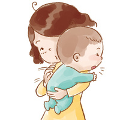

男婴：体重4.3-6.0kg，身长55.5-60.7cm，头围39.84cm，胸围40.10cm。
男婴：体重4.3-6.0kg，身长55.5-60.7cm，头围39.84cm，胸围40.10cm。
女婴：体重4.0-5.4kg，身长54.4-59.2cm，头围38.67cm，胸围38.78cm。
生理发展：
动作开始变得更自发性，反射动作开始消失。
心智发展：
会发出各种声音来表达感情和需要。
感官与反射：
很容易会被妈妈的声音安慰。
社会发展：
能辨别妈妈的脸和声音。